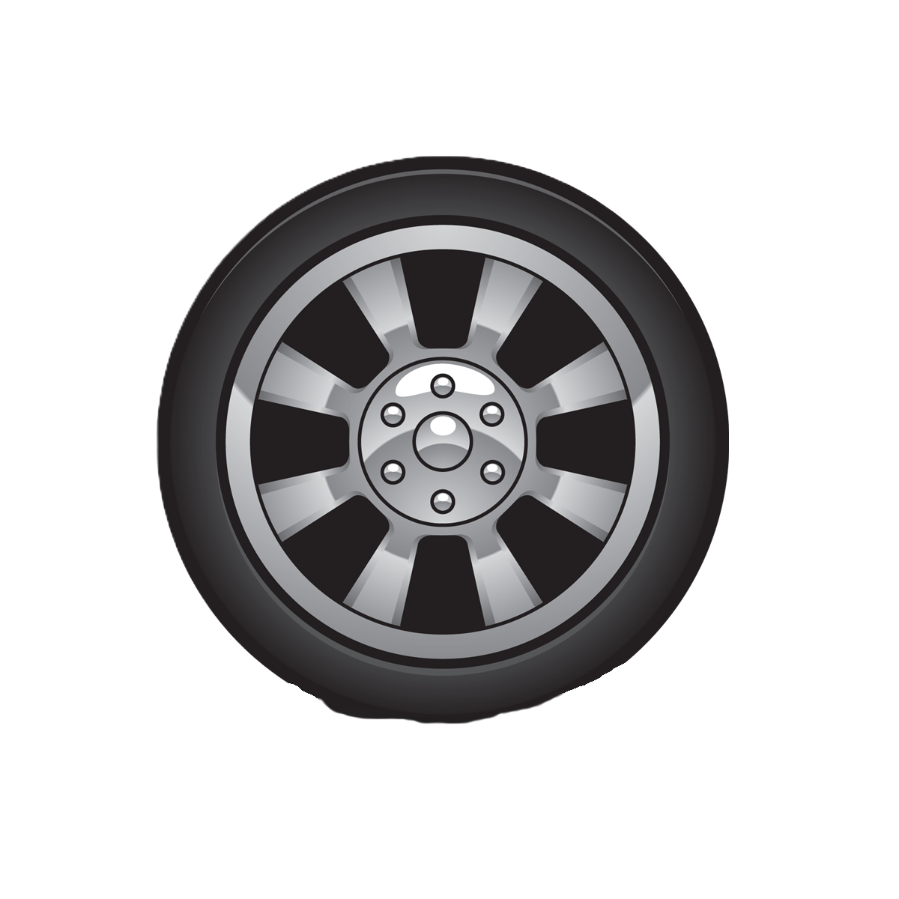

2024
B.Tech - Lendi Institute of Engineering & Technology (LIET)
E.E.E.
CGPA: 0
Vizianagaram
ENGINEER PROFILE
Designing intelligent systems where electrical engineering meets software innovation.
Career Objective: Combining electrical engineering fundamentals with software and analytical problem-solving skills to build intelligent and efficient systems.
Engineer Mode Detail: Current profile emphasis combines electrical protection awareness, control-oriented thinking, and software implementation discipline for practical field-to-software workflows.
2024
E.E.E.
CGPA: 0
Vizianagaram
2020
M.P.C.
Score: 0
Vizianagaram
2018
S.S.C.
Score: 0
Vizianagaram
Engineer Mode Detail: Academic progression shows strengthening analytical performance and domain transfer from electrical systems toward software-backed engineering execution.
ENGINEERING PHILOSOPHY
Engineer Mode Detail: Principle set maps to a closed engineering loop where control establishes stability, measurements drive decisions, and software enables repeatable optimization.
TECHNICAL SKILLS
Engineer Mode Detail: Skill stack is used as an integration pipeline rather than isolated tools.
ENGINEERING ARCHIVE

Engineer Mode Detail : MATLAB/Simulink adaptive PID model on a 3-phase BLDC drive was evaluated around 1000 RPM with 48 V DC supply and torque load Te = 10 N-m.
Engineer Mode Detail : control strategies discussed include PI, PID, Fuzzy Logic, and Adaptive PID.
INTERNSHIPS & INDUSTRIAL EXPERIENCE
Industrial Multifunction Meter Data Access
Engineer Mode Detail: Experience set contributes cross-domain readiness for electrical systems, cloud platform logic, and secure software workflows.
CERTIFICATIONS
ACHIEVEMENTS
CONTACT
Pasupuleti Veni Sri Sowrya | Tanuku, Rajahmundry